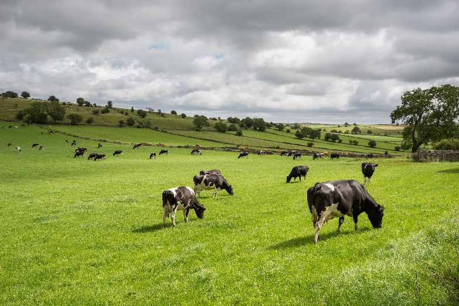
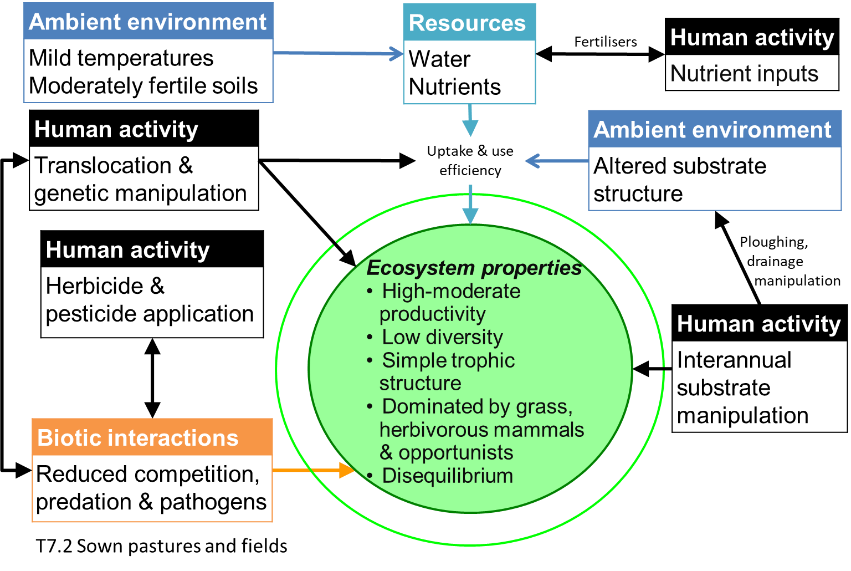
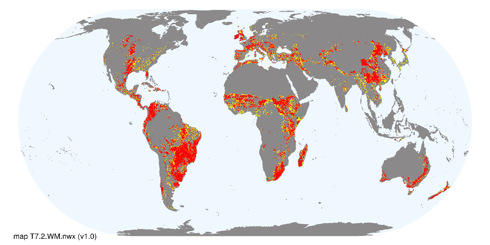

Rename T7.2 Sown livestock pastures
The name of this ecosystem functional group in version 2.1 of the Global Ecosystem Typology is Sown pastures and fields. However, fields occur in other ecosystem functional groups as well as this one (for example in T7.1). We thus note the potential alternative name Sown pastures, excluding specific mention of fields.
Revision summary: Rename T7.2 Sown livestock pastures
Origin: Agricultural ecosystems WG (Driver & Botts 2025)
Justification:
Current status: Proposal considered by GET-SC on 8/9/2025 and approved for implementation.
See new profile text below, compare to current text at global-ecosystems.org (opens in new tab)
T7.2 Sown livestock pastures

Ecosystem properties: Structurally simple, high-productivity pastures are maintained by the intensive anthropogenic supplementation of nutrients (more rarely water) and artificial disturbance regimes (e.g. periodic ploughing), translocation (e.g. livestock movement and sowing), and harvesting of animals or plants. The magnitude of these inputs distinguish these systems from semi-natural pastures and rangelands in biomes T4 and T5 used for less intense livestock production. They are dominated by one or few selected plant species (C3 and C4 perennial pasture grasses and/or herbaceous legumes) and animal species (usually large mammalian herbivores) for commercial production of food or materials, ornamental displays, or sometimes subsistence. Their composition and structure is maintained by the translocation and/or managed reproduction of target species and the periodic application of herbicides and pesticides and/or culling to exclude competitors, predators, herbivores, or pathogens. Consequently, compared to ‘natural’ rangeland systems and semi-natural pastures, these systems have low functional and taxonomic diversity and little or no local endemism. Target biota are genetically manipulated to promote rapid growth rates, efficient resource capture, enhanced resource allocation to production tissues, and tolerance to harsh environmental conditions, diseases, and predators, . They are harvested by humans continuously or periodically for consumption or maintenance. Typically, at least 40% of net primary productivity is appropriated by humans. Major examples include intensively managed production pastures for livestock or forage (e.g. hay). Livestock pastures may be rotated inter-annually with non-woody crops (T7.1), or they may be managed as mixed silvo-pastoral systems (T7.3). Target biota coexist with native and cosmopolitan ruderal biota that exploits production landscapes through efficient dispersal, rapid establishment, high fecundity, and rapid population turnover. When the ecosystem is abandoned or managed less intensively, non-target biota become dominant and may form a steady, self-maintaining state or a transitional phase to novel ecosystems.

Ecological drivers: High to moderate natural availability of water and nutrients is typically supplemented by human inputs via water management, landscape drainage modifications (e.g. surface earthworks), and/or fertiliser application at varied rates. Intermittent flooding may occur where pastures replace palustrine wetlands. Temperatures are mild to warm, at least seasonally. Typically associated with moderately fertile substrates and flat to undulating terrain accessible by machinery. Artificial disturbance regimes (e.g. ploughing for up to 5 years/decade) maintain soil turnover, aeration, and nutrient release.

Distribution: Mostly in tropical to temperate climatic zones and developed countries across Europe, east and south Asia, subtropical and temperate Africa, southern Australasia, north and central America, and temperate south America.
References
Bernués A, Ruiz R, Olaizola A, Villalba D, Casasús I (2011) Sustainability of pasture-based livestock farming systems in the European Mediterranean context: Synergies and trade-offs. Livestock Science 139: 44–57.
Spedding CRW (1986) Animal production from grass: A systems approach. Bioindustrial ecosystems (Eds. DAJ Cole, GC Brander), pp 107-120. Ecosystems of the world vol. 21. Elsevier, Amsterdam.
Public consultation
Public consultation is closed. This edit fixes a discrepancy between version and is approved for implementation.